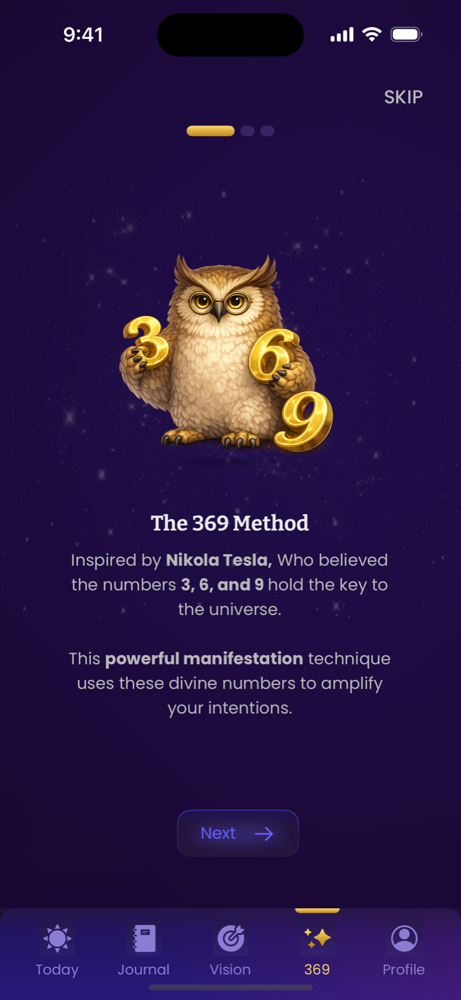

How to Do the 369 Method, Step by Step
To do the 369 method, write one present-tense affirmation 3 times in the morning, 6 times in the afternoon, and 9 times before sleep — every day for 33 days. Here's exactly how, from writing your first affirmation to finishing a full cycle: five steps, one sentence, three moments a day.
Choose one specific desire → craft it into a present-tense, gratitude-first affirmation → write it 3× in the morning, 6× in the afternoon, and 9× before bed → repeat daily for 33 days → then release it and act on what you notice.
Step 1: Choose one specific desire
The 369 method runs on focus, so pick one thing. Not "a better life" — one desire you can picture in detail: a specific job, a relationship, a monthly income figure, a health milestone, a home. A good test: if it came true tomorrow, would you know it instantly? "More confidence" fails that test; "I speak up in every meeting without my heart racing" passes.
Step 2: Craft your affirmation
Turn the desire into a single sentence that follows three rules:
- Present tense — write as if it already happened. "I have," "I am," never "I want" or "I hope."
- Gratitude first — open with thanks: "I am so happy and grateful now that…". Gratitude keeps you in abundance instead of lack.
- Feel-able detail — include one detail that triggers emotion. Not just "my new apartment" but "my sunlit apartment where I drink coffee by the window."
"I am so happy and grateful now that [desire, in the present], and I feel [emotion]."
"I am so happy and grateful now that clients I love keep booking me, and I feel calm and abundant."
Aim for a sentence you can write in 15–20 seconds. You'll be writing it 18 times a day — length is the enemy of consistency. Need inspiration? Steal from our list of 369 affirmation examples.
Step 3: Follow the 3-6-9 daily schedule
| Session | When | Repetitions | Why this moment |
|---|---|---|---|
| Morning | Within an hour of waking | 3× | Sets the day's intention before distractions begin |
| Afternoon | Roughly midday, before 5pm | 6× | Re-anchors your focus when momentum fades |
| Night | Last 30 minutes before sleep | 9× | Hands the intention to your subconscious overnight |
While you write, don't rush. Say the words in your head, and let yourself feel the version of you for whom the sentence is simply true. Thirty seconds of genuine feeling beats five minutes of mechanical copying.
Step 4: Repeat for 33 days
The traditional cycle is 33 days — long enough to rewire attention and build the habit, short enough to stay committed. Some people feel shifts in the first week; others notice them only in hindsight. Both are normal. What breaks the method isn't slow results — it's skipped days that turn into abandoned notebooks. Three defenses:
- Anchor each session to an existing habit — after your morning coffee, after lunch, after brushing your teeth at night.
- Set reminders for each window instead of trusting memory.
- Track your streak visibly — an unbroken chain is its own motivation.
Step 5: Release it and act
After the night session, stop negotiating with the universe. Obsessively checking "is it working yet?" is lack-energy in disguise. Write, feel, close the book — and during the day, act on anything your newly-tuned attention flags: the job post, the introduction, the idea. The 369 method opens your eyes; walking is still your job.
Common mistakes to avoid
- Changing the affirmation mid-cycle. Refining once in the first days is fine; rewriting weekly resets the groove.
- Stacking five desires. One cycle, one desire. Run the next cycle for the next dream.
- Writing in the negative. "I am no longer broke" keeps "broke" center stage. Write toward, not away.
- Quitting at day 10. The boring middle is the method. That's where the rewiring happens.
What if I miss a session?
You will — everyone does. The rule that keeps the practice alive: a missed session costs a session, never the cycle. If the afternoon slipped by, write the six lines when you remember, even at 9pm, and do the night nine before bed. If a whole day vanished, write one heartfelt round the next morning and carry on. The method is a rhythm, not a tightrope; the only fatal mistake is deciding one stumble means starting over from zero — that's how 33-day cycles become 4-day cycles.
Doing it in the Manifest app
The Manifest app turns these five steps into a guided flow: it stores your affirmation, opens the right session at the right time window, counts your 3, 6, and 9 repetitions, and tracks the full 33-day challenge with streaks and a streak freeze. Lock Screen widgets and Live Activities keep the ritual one glance away.

Next: make sure your sentence is strong with these 369 method examples, or read what to expect week-by-week in the 33-day challenge guide.
Your 3-6-9 schedule, on autopilot
Manifest reminds you at each window, counts your 3, 6, and 9 lines, and keeps your streak alive with a streak freeze. Try it free for 3 days.